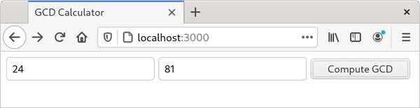
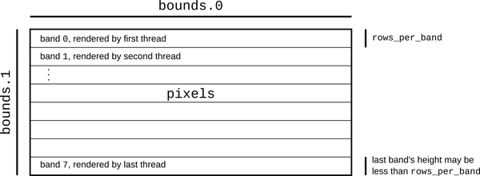

第二章 了解 Rust 语言
Rust 为编写这类书籍的作者提出了挑战：赋予语言独特特性的并非是那种可以在首页上直接展示的特别出色的功能，而是语言各个组成部分之间的设计方式。这些组成部分都是为了更好地服务于我们在上一章中设定的目标而协同工作的。语言的每个部分都有其存在的意义，这些意义都是与其他部分相互关联的。
因此，我们并没有一次只处理一种语言特性，而是准备了一系列小型但完整的程序示例，每个程序都围绕某种语言特性展开，以具体的应用场景来介绍该特性的更多方面。
-
作为热身，我们有一个程序，它可以在命令行参数上进行简单的计算，并且包含单元测试。这个例子展示了 Rust 的核心类型以及基本的语法。
-
接下来，我们将构建一个 Web 服务器。我们将使用第三方库来处理 HTTP 相关的细节，同时会介绍字符串处理、闭包以及错误处理方面的知识。
-
我们的最后一个程序展示了一个漂亮的分形结构，通过将计算任务分布在多个线程上来实现加速。这个示例包含了一个通用函数的实现，展示了如何处理类似像素缓冲这样的数据结构，同时展示了 Rust 在并发处理方面的优势。
Rust 承诺能够避免未定义的行为，同时将对性能的影响降到最低。这一特性影响着系统各个部分的设计，从标准的数据结构如向量和字符串，到 Rust 程序如何使用第三方库。关于如何实现这一点的细节，全书都有详细阐述。不过现在，我们想向您展示：Rust 是一种非常实用且易于使用的语言。
首先，当然，你需要先在电脑上安装 Rust 编程语言。
Rustup 和 Cargo
安装 Rust 的最佳方式就是使用 rustup 工具。请访问 https://rustup.rs，并按照那里的说明进行操作。
或者，您也可以访问 Rust 的官方网站，获取适用于 Linux、 macOS 和 Windows 的预构建软件包。某些操作系统发行版中已经包含了 Rust 组件。我们推荐使用 rustup 工具，因为它可以管理 Rust 的安装过程，就像 Ruby 使用 RVM，Node 使用 NVM 一样。例如，当发布新版本的 Rust 时，只需输入 rustup update 即可轻松进行升级，无需任何操作。
无论如何，一旦你完成了安装过程，你的命令行应该会多出一些新的命令可用了：
$cargo--versioncargo 1.95.0 (f2d3ce0bd 2026-03-21)$rustc--versionrustc 1.95.0 (59807616e 2026-04-14)$rustdoc--versionrustdoc 1.95.0 (59807616e 2026-04-14)
在这里， $ 表示命令提示符；在 Windows 系统中，相当于 PS C:\> 或类似的符号。在当前的脚本中，我们依次运行了三个已安装的命令，让每个命令报告它所使用的版本。具体步骤如下：
-
cargo是 Rust 的编译管理器、包管理器，同时也是一种多功能工具。你可以使用 Cargo 来启动新项目、构建和运行程序，以及管理代码中依赖的任何外部库。 -
rustc就是 Rust 编译器。通常我们会让 Cargo 来调用编译器进行编译，但有时直接运行编译器也会很有用。 -
rustdoc是 Rust 的文档生成工具。如果你在程序的源代码中以适当的形式编写文档，rustdoc可以从中生成格式良好的 HTML 文档。就像rustc一样，我们通常让 Cargo 来负责生成这些文档。
为了方便起见，Cargo 可以为我们创建一个新的 Rust 包，并附带一些适当的标准元数据：
$cargonewhelloCreating binary (application) `hello` package
该命令创建一个新的包目录，名为 hello，现在可以开始构建命令行可执行文件了。
查看该包的最上层目录内容：
$cdhello$ls-latotal 24drwxrwxr-x. 4 jimb jimb 4096 Sep 22 21:09 .drwx------. 62 jimb jimb 4096 Sep 22 21:09 ..drwxrwxr-x. 6 jimb jimb 4096 Sep 22 21:09 .git-rw-rw-r--. 1 jimb jimb 7 Sep 22 21:09 .gitignore-rw-rw-r--. 1 jimb jimb 88 Sep 22 21:09 Cargo.tomldrwxrwxr-x. 2 jimb jimb 4096 Sep 22 21:09 src
我们可以看到，Cargo 创建了一个名为 Cargo.toml 的文件，用于保存该包的元数据。目前，这个文件中并没有包含太多信息：
[package]name="hello"version="0.1.0"edition="2024"[dependencies]
如果我们的项目需要依赖其他库，我们可以将这些依赖项记录到这个文件中。这样，Cargo 就会负责下载、构建和更新这些库。我们将在第八章详细介绍 Cargo.toml 文件的配置。
Cargo 已经为我们准备的包适合与 git 版本控制系统一起使用。它创建了一个.git 元数据子目录，以及一份.gitignore 文件。如果你希望在命令行中跳过这一步骤，可以将 --vcs none 作为参数传递给 cargo new 。
src 子目录中包含了实际的 Rust 代码：
$cdsrc$ls-ltotal 4-rw-rw-r--. 1 jimb jimb 45 Sep 22 21:09 main.rs
看来，Cargo 已经开始为我们编写程序了。main.rs 文件中包含了相关的代码：
fnmain(){println!("Hello, world!");}
在 Rust 语言中，你甚至不需要自己编写“Hello, World!”这样的程序。而一个全新的 Rust 程序的代码量仅包含两个文件，总共九行代码而已。
我们可以从包中的任何目录调用 cargo run 命令来构建和运行我们的程序：
$cargorunCompiling hello v0.1.0 (/home/jimb/rust/hello)Finished `dev` profile [unoptimized + debuginfo] target(s) in 0.28sRunning `/home/jimb/rust/hello/target/debug/hello`Hello, world!
在这里，Cargo 已经调用了 Rust 编译器 rustc ，然后运行了它生成的可执行文件。Cargo 将可执行文件放置在了包结构的目标子目录中：
$ls-l../target/debugtotal 580drwxrwxr-x. 2 jimb jimb 4096 Sep 22 21:37 builddrwxrwxr-x. 2 jimb jimb 4096 Sep 22 21:37 depsdrwxrwxr-x. 2 jimb jimb 4096 Sep 22 21:37 examples-rwxrwxr-x. 1 jimb jimb 576632 Sep 22 21:37 hello-rw-rw-r--. 1 jimb jimb 198 Sep 22 21:37 hello.ddrwxrwxr-x. 2 jimb jimb 68 Sep 22 21:37 incremental$../target/debug/helloHello, world!
当我们完成之后，Cargo 可以帮我们清理掉那些生成的文件。
$cargocleanRemoved 21 files, 8.4MiB total$../target/debug/hellobash: ../target/debug/hello: No such file or directory
锈蚀函数
Rust 的语法设计得相当缺乏创意。如果你熟悉 C、C++、Java 或 JavaScript 语言，那么你应该能够理解 Rust 程序的整体结构。下面这个函数使用了欧几里得算法来计算两个整数的最大公约数。你可以将这段代码添加到 src/main.rs 文件的末尾：
fngcd(mutn:u64,mutm:u64)->u64{whilem!=0{ifm<n{lett=m;m=n;n=t;}m=m%n;}n}
fn 关键字（发音为“fun”）用于引入一个函数。在这里，我们定义了一个名为 gcd 的函数，该函数接受两个参数 n 和 m ，这两个参数都是 u64 类型的，即无符号 64 位整数。 -> 符号出现在返回类型之前：我们的函数返回一个 u64 类型的值。空格分隔的缩进方式是标准 Rust 编程风格。
Rust 中的整数类型名称体现了它们的位数和符号属性： i32 是一个有符号的 32 位整数； u8 是一个无符号的 8 位整数，用于表示“字节”级别的值；类似地， isize 和 usize 类型则分别表示有符号和无符号的 32 位整数，在 32 位平台上长度为 32 位，在 64 位平台上长度为 64 位。Rust 还有两种浮点类型，分别是 f32 和 f64 ，它们分别对应 IEEE 单精度和双精度浮点类型，类似于 C 和 C++中的 float 和 double 。
默认情况下，一旦变量被初始化，其值就无法被更改。但是，通过在参数 n 和 m 之前加上 mut 关键字（意为“可变性”），就可以让函数的内部代码对它们进行赋值操作。实际上，大多数变量都不会被重新赋值；不过，对于那些需要被重新赋值的变量，使用 mut 关键字作为提示信息，在阅读代码时可能会有所帮助。
我们这个函数的主要部分是一个 while 循环，该循环包含一个 if 语句和一个赋值操作。与 C 和 C++不同，Rust 语言不需要在条件表达式周围使用括号，但是要求围绕这些语句使用花括号来包裹它们。
在 let 语句中，我们声明了一个局部变量，比如我们函数中的 t 。我们不需要明确写出 t 的类型，因为 Rust 可以根据变量的使用方式来推断其类型。在我们的函数中，只有 u64 符合 t 的类型要求，即与 m 和 n 相匹配。Rust 只会在函数体内推断类型：我们必须像之前那样明确写出函数参数和返回值的类型。如果我们想要明确写出 t 的类型，可以这样写：
lett:u64=m;
Rust 中的 return 语句是必需的，但 gcd 函数并不需要它。如果函数的主体以某个表达式结尾，且该表达式后面没有分号，那么这个表达式就代表了函数的返回值。实际上，任何被大括号包围的代码块都可以作为表达式使用。例如，下面这个代码段就可以打印一条消息，然后返回 x.cos() 作为其值：
{println!("evaluating cos x");x.cos()}
在 Rust 语言中，通常会在函数的执行流程结束时使用这种形式来声明函数的返回值，而只有在某些特殊情况下，才会使用 return 语句来明确表示函数提前结束的情况。
编写和运行单元测试
Rust 语言本身就提供了对测试的支持。要测试我们的 gcd 函数，我们可以在 src/main.rs 文件的末尾添加这段代码：
#[test]fntest_gcd(){assert_eq!(gcd(14,15),1);assert_eq!(gcd(2*3*54321,5*7*54321),54321);assert_eq!(gcd(0,0),0);}
在这里，我们定义了一个名为 test_gcd 的函数。该函数会调用 gcd ，并验证其返回的值是否正确。在定义中位于 #[test] 位置的 test_gcd 被标记为测试函数，在常规编译过程中会被跳过；但如果我们使用 cargo test 命令运行程序，这个测试函数会被自动执行。我们可以在源代码中任意位置放置测试函数，它们会紧挨着对应的代码存在。而 cargo test 则会自动收集所有这些测试函数并一起执行。
#[test] 标记就是一个属性的例子。属性是一种扩展机制，可以用来为函数和其他声明添加额外信息。就像 C++和 C#中的属性，或者 Java 中的注释一样。属性可以用于控制编译器发出的警告和代码风格检查，还可以根据条件包含代码（比如 C 和 C++中的 #ifdef ），告诉 Rust 如何与用其他语言编写的代码进行交互等。随着我们继续学习，会看到更多关于属性的例子。
我们的测试包含了对 assert_eq! 宏的多次调用，同时测试了几个 gcd 测试用例的结果。 ! 字符标识了这些调用为宏调用，而非函数调用。在编译过程中，宏调用会被“展开”成 Rust 代码。我们对 assert_eq! 的首次调用会展开成一段代码，该代码会检查 gcd(14, 15) 是否等于 1 。如果不等，就会打印出包含两个数值以及失败检查位置的帮助性错误消息。之后，程序会终止运行，或者在这种情况下，测试也会终止。这种突然的终止被称为“ panic”。
此外，还有 assert!(condition); 这样的宏，可以用来检查布尔条件。就像 C 和 C++中的 assert 宏一样，Rust 中的 assert! 和 assert_eq! 宏通常用于在常规代码中验证不变量，而不仅仅是测试阶段。与 C 和 C++不同，在 Rust 中，无论程序如何编译，断言都必須被验证。还有 debug_assert! 和 debug_assert_eq! 宏，在程序编译时，这些宏的断言会被跳过，以提高编译速度。
通过将在本章开头创建的 hello 包中添加了我们的 gcd 和 test_gcd 定义，并且当前目录位于该包的子目录内，我们可以像下面这样运行测试：
$cargotestCompiling hello v0.1.0 (/home/jimb/rust/hello)Finished `test` profile [unoptimized + debuginfo] target(s) in 0.35sRunning unittests src/main.rs (.../hello/target/debug/deps/hello-2375...)running 1 testtest test_gcd ... oktest result: ok. 1 passed; 0 failed; 0 ignored; 0 measured; 0 filtered out;finished in 0.00s
处理命令行参数
为了让我们的程序能够接受命令行参数中的一系列数字，并输出它们的最大公约数，我们可以在 src/main.rs 中的 main 函数处替换为以下代码：
usestd::str::FromStr;usestd::env;fnmain(){letmutnumbers=Vec::new();forarginenv::args().skip(1){numbers.push(u64::from_str(&arg).expect("error parsing argument"));}ifnumbers.len()==0{eprintln!("Usage: gcd NUMBER ...");std::process::exit(1);}letmutd=numbers[0];formin&numbers[1..]{d=gcd(d,*m);}println!("The greatest common divisor of {numbers:?} is {d}");}
这是一段较长的代码，所以我们先逐步解析它吧：
usestd::str::FromStr;usestd::env;
第一个 use 声明将标准库中的 FromStr 特质引入作用域。特质是一组函数签名，类型可以实现这些签名，类似于 Java 或 C#中的接口。任何实现了 FromStr 特质的类型都拥有一个 from_str 方法，该方法可以从字符串中解析该类型的数值。 u64 类型实现了 FromStr 特质，而我们将使用 u64::from_str 来解析命令行参数。虽然我们在程序中从未使用过 FromStr 这个名称，但特质的作用域内必须包含其方法才能正常使用。我们将在第十一章详细讨论特质。
第二个 use 声明引入了 std::env 模块，该模块提供了多种用于与执行环境交互的实用函数和类型，其中包括 args 函数，该函数让我们能够访问程序的命令行参数。
接下来是该程序的 main 函数：
fnmain(){
我们的 main 函数并不返回任何值，因此我们可以省略掉通常会在参数列表之后的 -> 和返回类型声明。
letmutnumbers=Vec::new();
我们声明了一个可变的局部变量 numbers ，并将其初始化为一个空向量。 Vec 是 Rust 中可动态扩展的向量类型，类似于 C++中的 std::vector 、Python 的列表或 JavaScript 的数组。虽然向量可以动态地被扩展或收缩，但仍然需要标记变量 mut ，这样 Rust 才能允许我们在向量的末尾添加数字。
类型 numbers 实际上是一个由 u64 个值组成的向量。不过，就像之前一样，我们无需手动写出这些值的具体形式。Rust 会自动识别这一类型，因为我们将值赋给 u64 这个向量，而向量中的元素个数恰好为 u64 。同时，我们还将向量中的元素传递给 gcd ，而 gcd 只接受 u64 类型的值。
forarginenv::args().skip(1){
在这里，我们使用了一个 for 循环来处理命令行参数。该循环依次将每个参数赋值给变量 arg ，然后执行循环体内的代码。
std::env 模块的 args 函数返回一个迭代器，该迭代器用于遍历命令行参数。也就是说，它的返回类型实现了 Iterator 特征，该特征提供了对序列值进行循环操作的方法。在 Rust 中，迭代器非常常见；标准库还包含了其他类型的迭代器，比如用于遍历向量元素、文件行、通信渠道中接收到的消息，以及几乎所有适合循环处理的对象。Rust 的迭代器非常高效：编译器通常能够将它们转换为与手工编写的循环相同的代码。我们将在第 15 章详细解释这一点，并给出具体的示例。
除了可以用于 for 循环之外，迭代器还包含许多可以直接使用的方法。例如，由 args 生成的迭代器首先返回的值总是当前程序的名称。不过，我们不想使用这个值，因此我们调用迭代器的 skip 方法来生成一个新的迭代器，该迭代器会跳过这个返回值。
numbers.push(u64::from_str(&arg).expect("error parsing argument"));
在这里，我们调用 u64::from_str 来尝试将命令行参数 arg 解析为无符号 64 位整数。这个调用并不是针对特定的 u64 值进行的，而是与 u64 类型相关的函数，类似于 C++或 Java 中的静态方法。
from_str 函数不会直接返回 u64 的值，而是返回一个 Result 值，该值表示解析是否成功。 Result 值有两种可能：
-
值为Ok(v)，表示解析成功，v即为所得到的数值。 -
一个值为
Err(e)的值，表示解析失败，而e则是用于说明失败原因的错误值。
那些可能遇到各种问题的函数，比如处理输入或输出，或者与操作系统进行交互的函数，可以返回 Result 类型的结果。 Ok 变体会表示成功的结果——比如传输的字节数、打开的文件等；而 Err 变体则会返回一个错误代码，用来说明出错的原因。与大多数现代语言不同，Rust 语言没有异常机制：所有的错误都是通过 Result 或 panic 来处理，具体细节请参考第 7 章的说明。
我们使用 Result 的 expect 方法来检查解析是否成功。如果结果是 Err(e) ，那么 expect 会打印出包含 e 描述的消息，然后立即终止程序。然而，如果结果是 Ok(v) ，那么 expect 只是简单地返回 v 本身，最终将 v 添加到我们的数字向量末尾。
ifnumbers.len()==0{eprintln!("Usage: gcd NUMBER ...");std::process::exit(1);}
对于空集合来说，并没有最大公约数。因此，我们会检查该向量是否至少有一个元素。如果不存在这样的元素，我们就会输出错误信息并退出程序。我们使用 eprintln! 宏将错误信息输出到标准错误输出流中。
letmutd=numbers[0];formin&numbers[1..]{d=gcd(d,*m);}
for 循环中有两个令人惊讶的细节。首先，我们写了 for m in &numbers[1..] ；那么 & 运算符是用来做什么的呢？其次，我们写了 gcd(d, *m) ；那么 *m 中的 * 是用来做什么的呢？这两个细节是相互补充的。
因此，在迭代过程中，我们需要告诉 Rust：向量的所有权应该保留给 numbers ；我们只是借用其中的元素用于循环操作。 &numbers[1..] 中的 & 运算符从第二个元素开始，借用对向量元素的引用。 for 循环会遍历这些被引用的元素，然后 m 依次借用每个元素。 *m 中的 * 运算符会解引用 m ，返回它所指向的值；这个值是我们要传递给 gcd 的下一个 u64 。最后，由于 numbers 拥有向量的所有权，当 main 结束时，Rust 会自动释放该向量。
Rust 中的所有权和引用规则是支撑 Rust 内存管理和安全并发机制的关键所在。我们将在第四章和第五章中详细讨论这些规则。要真正掌握 Rust，你需要熟悉这些规则。不过，对于这次入门之旅来说，你只需要知道： &x 借用了 x 的引用，而 *r 则是引用 r 所指向的值。
继续我们的程序讲解：
println!("The greatest common divisor of {numbers:?} is {d}");
在遍历了 numbers 中的元素之后，程序会输出结果。 println! 宏接受一个格式字符串，然后将大括号 {...} 中的部分内容替换为指定的值，最后将结果输出到标准输出流中。
cargo run 命令允许我们向程序传递参数，因此我们可以尝试使用命令行处理功能：
$cargorun4256Compiling hello v0.1.0 (/home/jimb/rust/hello)Finished `dev` profile [unoptimized + debuginfo] target(s) in 0.22sRunning `/home/jimb/rust/hello/target/debug/hello 42 56`The greatest common divisor of [42, 56] is 14$cargorun7994592882327347Finished `dev` profile [unoptimized + debuginfo] target(s) in 0.02sRunning `/home/jimb/rust/hello/target/debug/hello 799459 28823 27347`The greatest common divisor of [799459, 28823, 27347] is 41$cargorun83Finished `dev` profile [unoptimized + debuginfo] target(s) in 0.02sRunning `/home/jimb/rust/hello/target/debug/hello 83`The greatest common divisor of [83] is 83$cargorunFinished `dev` profile [unoptimized + debuginfo] target(s) in 0.02sRunning `/home/jimb/rust/hello/target/debug/hello`Usage: gcd NUMBER ...
在这一部分中，我们使用了 Rust 标准库中的一些功能。如果你想要了解还有哪些可用的功能，我们强烈建议你尝试阅读 Rust 的在线文档。该文档拥有实时搜索功能，使得文档的查阅变得非常简单，而且还包含了指向源代码的链接。当你安装 Rust 时， rustup 命令会自动在你的计算机上安装一份该文档的副本。你可以在 Rust 的官方网站上查看标准库文档，或者通过以下命令在浏览器中查看文档：
$rustupdoc--std
将页面内容呈现给网络用户
Rust 的一个优势在于，它拥有大量可在 crates.io 网站上免费下载的库包。 cargo 命令使得你的代码能够轻松使用这些库包：它会下载正确版本的库包，进行编译，并根据需求进行更新。在 Rust 中，无论是库还是可执行文件，都被称为“crate”；Cargo 和 crates.io 这两个项目都是从这个术语衍生而来的。
为了展示这是如何工作的，我们将使用 actix-web Web 框架 crate、 serde 序列化 crate，以及许多其他依赖这些框架的库，来构建一个简单的 Web 服务器。如图 2-1 所示，我们的网站会请求用户输入两个数字，然后计算出它们的最大公约数。

图 2-1. 提供计算最大公约数的网页
首先，我们会让 Cargo 为我们创建一个新的包，名为 actix-gcd 。
$cargonewactix-gcdCreating binary (application) `actix-gcd` package$cdactix-gcd
然后，我们会告诉 Cargo 我们想要使用的那些软件包：
$cargoaddactix-web@4.13.0Updating crates.io indexAdding actix-web v4.13.0 to dependencies...$cargoaddserde@1.0.228--featuresderiveUpdating crates.io indexAdding serde v1.0.228 to dependencies...
这些命令为我们的新项目的 Cargo.toml 文件添加了相应的条目，现在该文件的内容看起来像这样：
[package]name="actix-gcd"version="0.1.0"edition="2024"[dependencies]actix-web="4.13.0"serde={version="1.0.228",features=["derive"]}
你可以不必使用 cargo add ，而只需在编辑器中打开 Cargo.toml 文件，然后自己添加最后两行内容即可。从现在开始，我们将展示 Cargo.toml 文件的片段，而不是 cargo add 命令。因为这样更容易复制粘贴，而且还能包含我们使用的每个包的版本号。
在 Cargo.toml 文件的 [dependencies] 部分中，每一行都表示 crates.io 上某个包的名称以及我们希望使用的该包的版本。这些包的更新版本经常会被发布出来。默认情况下，当我们在新机器上从零开始构建这个项目或运行 cargo update 时，Cargo 会下载这些包的最新兼容版本，例如 Actix 4.15.1 和 Serde 1.0.253。我们将在第八章中详细讨论版本管理问题。
这些 crate 可以拥有可选的功能：即那些并非所有用户都需要的一些接口或实现部分，这些部分默认会被排除在构建之外。 serde 这个 crate 提供了一种非常简洁的方式来处理来自网页表单的数据，但根据 serde 的文档，只有当我们选择该 crate 的 derive 功能时，才能使用它。因此，我们在 Cargo.toml 文件中也添加了这一功能，如下所示。
在最初的版本中，我们会保持 Web 服务器的简单设计：它只会提供用于请求用户输入数字的页面。我们将把 actix-gcd/src/main.rs 文件的内容替换为以下内容：
useactix_web::{App,HttpResponse,HttpServer,web};#[actix_web::main]asyncfnmain(){letserver=HttpServer::new(||{App::new().route("/",web::get().to(get_index))});println!("Serving on http://localhost:3000...");server.bind("127.0.0.1:3000").expect("error binding server to address").run().await.expect("error running server");}asyncfnget_index()->HttpResponse{HttpResponse::Ok().content_type("text/html").body(r#"<title>GCD Calculator</title><form action="/gcd" method="post"><input type="text" name="n"/><input type="text" name="m"/><button type="submit">Compute GCD</button></form>"#)}
这次，我们的 main 函数是一个 async fn 函数，并且带有 #[actix_web::main] 属性标记。Actix 使用的是异步代码编写，能够同时处理数千个连接，而无需创建数千个系统线程。Rust 中的 async 和 await 功能与 C#和 JavaScript 中的 async/await 功能类似，或者类似于 Erlang 中的轻量级进程。这些功能适用于那些不需要持续使用 CPU 的任务——比如，像我们这种情况，任务可能需要花费大量时间等待网络响应。单个 CPU 核心可以流畅地运行多个并发的 async 任务，而无需承受系统线程带来的额外开销。我们将在第 20 章中详细解释这一点。
我们的 main 函数的实现非常简洁：它调用 HttpServer::new 来创建一个服务器，该服务器能够响应对单个路径的请求；接着打印一条消息，提醒我们如何连接到该服务器；最后设置该服务器在本地机器的 3000 端口上监听连接。
我们传递给 HttpServer::new 的参数就是 Rust 中的闭包表达式 || { App::new() ... } 。闭包是一种可以像函数一样被调用的值。这个闭包不接受参数，但如果存在参数，那么它们的名称就会出现在 || 竖线之间。 { ... } 则代表闭包的主体部分。当我们启动服务器时，Actix 会创建一组线程来处理传入的请求。每个线程都会调用我们的闭包来获取 App 的值，该值用于指示如何路由和处理请求。
这个闭包调用了 App::new ，创建了一个新的、空的 App ，然后调用了其 route 方法，以添加一条关于路径 "/" 的路由。该路由对应的处理程序 web::get().to(get_index) 会处理 HTTP GET 请求，通过调用函数 get_index 来实现这一功能。 route 方法返回了与调用时相同的 App 值，不过现在已经增加了新的路由信息。由于闭包体内没有分号，所以 App 就是闭包的返回值，可以供 HttpServer 线程使用。
get_index 函数生成一个 HttpResponse 值，该值代表了对 HTTP GET / 请求的响应。 HttpResponse::Ok() 表示 HTTP 200 OK 状态，表明请求成功。我们调用其 content_type 和 body 方法来填充响应的详细信息；每次调用都会返回给 HttpResponse 对象，并对其进行相应的修改。最后， body 的返回值就成为了 get_index 的返回值。
由于响应文本中包含大量双引号，我们使用 Rust 语言的“原始字符串”语法来书写它：先是一个 r 符号，接着是零个或多个井号（即 # 这样的字符），然后是一个双引号，再是字符串的内容，最后以一个双引号加上相同数量的井号来表示字符串的结束。在原始字符串中，任何字符都可以直接使用，无需转义；事实上，像 \" 这样的转义序列在这里是不被识别的。我们可以通过在引号前添加更多的井号来确保字符串按照预期的方式结束，这样就能避免在实际文本中出现不必要的转义字符。
在编写了 main.rs 之后，我们可以使用 cargo run 命令来完成所有必要的操作：下载所需的软件包，进行编译，构建我们的程序，将所有部分链接在一起，然后启动程序。
$cargorunUpdating crates.io indexDownloading crates ...Downloaded serde v1.0.100Downloaded actix-web v1.0.8Downloaded serde_derive v1.0.100...Compiling serde_json v1.0.40Compiling actix-router v0.1.5Compiling actix-http v0.2.10Compiling awc v0.2.7Compiling actix-web v1.0.8Compiling gcd v0.1.0 (/home/jimb/rust/actix-gcd)Finished `dev` profile [unoptimized + debuginfo] target(s) in 1m 24sRunning `/home/jimb/rust/actix-gcd/target/debug/actix-gcd`Serving on http://localhost:3000...
此时，我们可以在浏览器中访问给定的 URL，然后看到如图 2-1 所示的页面。
现在终于可以使用我们在 Cargo.toml 文件中列出的 serde crate 了。这个包提供了一个非常有用的工具，可以帮助我们处理表单数据。首先，我们需要在 src/main.rs 文件的顶部添加以下 use 声明：
useserde::Deserialize;
Rust 程序的开发者通常会将所有的声明集中放在文件的顶部，但实际上这并不是必须的。因为 Rust 允许声明以任意顺序出现，只要它们位于适当的嵌套层次上即可。
接下来，让我们定义一个 Rust 结构体类型，用于表示我们从该表单中期望获取的值：
#[derive(Deserialize)]structGcdParameters{n:u64,m:u64,}
在 struct 定义之上添加的注释是一种属性，就像我们之前用来标记测试函数的 #[test] 属性一样。在类型定义之上添加 #[derive(Deserialize)] 属性，可以告诉 serde crate 在程序编译时处理该类型，并自动生成代码来解析来自 HTML 表单中 POST 请求的数据中的该类型的值。实际上，这种属性足以让程序从几乎所有结构化的数据中解析 GcdParameters 值：JSON、YAML、TOML，或者任何其他文本或二进制格式的数据。 serde crate 还提供了 Serialize 属性，它可以生成相反的代码，即把 Rust 中的值以结构化格式输出出来。
在 m: u64 之后的逗号是可选的，因为那已经是最后一个字段了。在任何使用逗号的地方，Rust 都允许在末尾再添加一个逗号；当列表跨越多行时，按照这种标准方式添加逗号是一种良好的实践。这一点在数组元素和函数参数中同样适用。使用相同的语法格式可以让代码在换行时减少标点符号的使用，从而让代码 diff 结果更加简洁明了。
有了这个定义之后，我们就可以轻松编写我们的处理函数了：
asyncfnpost_gcd(form:web::Form<GcdParameters>)->HttpResponse{ifform.n==0||form.m==0{returnHttpResponse::BadRequest().content_type("text/html").body("Computing the GCD with zero is boring.");}letresponse=format!("The greatest common divisor of the numbers {} and {} \is <b>{}</b>\n",form.n,form.m,gcd(form.n,form.m),);HttpResponse::Ok().content_type("text/html").body(response)}
如果一个函数要作为 Actix 请求处理器使用，那么它的参数类型必须属于 Actix 能够从 HTTP 请求中提取的类型。我们的 post_gcd 函数只有一个参数 form ，该参数的类型為 web::Form<GcdParameters> 。只有当 T 能够从 HTML 表单数据中反序列化时，Actix 才能从 HTTP 请求中提取任何类型的 web::Form<T> 值。由于我们在 GcdParameters 类型定义中添加了 #[derive(Deserialize)] 属性，因此 Actix 可以从表单数据中反序列化该属性，所以请求处理器可以期待得到一个 web::Form<GcdParameters> 类型的参数值。这些类型与函数之间的关联都是在编译阶段确定的；如果你编写的函数参数类型是 Actix 无法处理的，Rust 编译器会立即提示你这个错误。
在查看 post_gcd 内部的代码后，可以发现当任一参数值为零时，该函数会返回 HTTP 400 错误。因为当我们使用 gcd 函数时，如果参数值为零，该函数会引发异常。之后，该代码会使用 format! 宏来构建响应。 format! 宏与 println! 宏类似，只不过它不会将文本写入标准输出，而是将其作为字符串返回。在这个例子中，由于我们要打印的文本内容并非简单的变量名，因此需要使用空括号 {} 来标记插入文本的位置，然后将这些值作为额外参数传递进去。一旦获得了响应文本， post_gcd 就会将其包装在 HTTP 200 OK 响应中，设置内容类型，然后将其返回给发送方。
我们还必须注册 post_gcd 作为该表单的处理器。我们将把 main 函数替换为这个版本的函数：
#[actix_web::main]asyncfnmain(){letserver=HttpServer::new(||{App::new().route("/",web::get().to(get_index)).route("/gcd",web::post().to(post_gcd))});println!("Serving on http://localhost:3000...");server.bind("127.0.0.1:3000").expect("error binding server to address").run().await.expect("error running server");}
最后剩下的部分就是我们之前在“Rust 函数”部分编写过的 gcd 函数。将这段代码添加到 actix-gcd/src/main.rs 文件中。完成这些操作后，你可以停止所有可能仍在运行的服务器，然后重新编译并重新启动程序。
$cargorunCompiling actix-gcd v0.1.0 (/home/jimb/rust/actix-gcd)Finished `dev` profile [unoptimized + debuginfo] target(s) in 0.0 secsRunning `target/debug/actix-gcd`Serving on http://localhost:3000...
这次，通过访问 http://localhost:3000 地址，输入一些数字，然后点击“计算最大公约数”按钮，你应该能够看到一些结果（见图 2-2）。

图 2-2. 网页展示计算最大公约数的结果
并发性
Rust 的一个显著优势就是其对并发编程的支持。确保 Rust 程序不会遇到内存错误的规定，同时也保证了线程可以以避免数据竞争的方式共享内存。例如：
-
如果你使用互斥量来协调对共享数据结构进行操作的线程，Rust 会确保除了在持有锁的情况下之外，无法访问这些数据。当你完成操作后，互斥量会自动释放。而在 C 和 C++中，互斥量与它所保护的数据之间的关系则需要通过注释来说明。
-
如果你想在多个线程之间共享只读数据，Rust 能够确保你不会意外地修改这些数据。在 C 和 C++中，类型系统可以辅助实现这一点，但很容易出错。
-
如果你将一个数据结构的所有权从某个线程转移到另一个线程，Rust 会确保你确实已经放弃了对该数据的一切访问权。在 C 和 C++中，则需要由你来确保发送数据的线程不再对数据有任何访问权限。如果你没有正确处理这个问题，其后果可能会取决于处理器缓存中的数据内容，以及你最近对内存进行了多少次写入操作。不过，我们并不为此感到遗憾。
你已经完成了第一个项目：用于实现最大公约数的 Actix Web 框架中，使用了线程池来运行请求处理函数。当服务器收到同时进行的请求时，可能会同时在多个线程上运行 get_index 和 post_gcd 函数。这可能会让人有些惊讶，因为我们编写这些函数时并没有考虑并发的情况。不过，Rust 保证这样做是安全的，无论你的服务器有多复杂，只要程序能够编译出来，就不会出现数据竞争的问题。所有的 Rust 函数都是线程安全的。
本节的程序绘制了曼德布罗特集合的图。曼德布罗特集合是由对复数进行某种简单函数的迭代而得到的分形。绘制曼德布罗特集合的图常被称作“尴尬的并行算法”，因为线程之间的通信方式非常简单；我们将在第十九章中介绍更复杂的通信模式，但这一示例已经展示了其中的一些基本要点。
首先，我们创建一个新的 Rust 项目：
$cargonewmandelbrotCreating binary (application) `mandelbrot` package$cdmandelbrot
所有代码都将放在 mandelbrot/src/main.rs 文件中，同时我们还会在 mandelbrot/Cargo.toml 文件中添加一些依赖项。
在讨论同时进行的曼德布罗特算法实现之前，我们需要先描述一下将要执行的计算过程。
曼德布罗特集合究竟是什么？
在阅读代码时，如果能对代码所实现的功能有一个清晰的理解，将会非常有帮助。那么，让我们先来简要探讨一些纯数学问题吧。我们将从一个简单的例子开始，然后逐步引入一些复杂的细节，直到最终理解马德布罗特集合核心的计算过程。
这是一个无限循环，采用 Rust 语言特有的语法来编写，即使用了 loop 语句。
fnsquare_loop(mutx:f64){loop{x=x*x;}}
在现实生活中，Rust 可能会发现 x 从未被使用过，因此可能不需要计算它的数值。但目前，我们假设代码按照编写的方式运行。那么 x 的值会如何变化呢？对于介于 0 和 1 之间的任何数来说，将其平方后会变小，所以它会趋近于零；而 1 的平方仍然是 1；对于大于 1 的数来说，其平方后会变大，所以它会趋近于无穷大；至于负数，其平方后会变成正数，之后它的行为就会类似于前面提到的几种情况（见图 2-3）。

图 2-3. 对一个数进行重复平方运算的效果
因此，根据您传递给 square_loop 的值， x 可能会保持为 0 或 1，接近 0，或者接近无穷大。
现在来考虑一个稍微不同的循环结构：
fnsquare_add_loop(c:f64){letmutx=0.0;loop{x=x*x+c;}}
下一个难点是：不要使用 f64 值，可以考虑使用复数来表示相同的循环。Crates.io 上的 num crate 提供了我们可以使用的复数类型，因此我们需要在程序的 Cargo.toml 文件的 [dependencies] 部分添加一行代码来引入 num 类型。同时，我们还可以引入 image crate，这个 crate 会在后面被用到。
[package]name="mandelbrot"version="0.1.0"edition="2024"[dependencies]num="0.4.3"image="0.25.10"
现在我们可以编写这个循环的倒数第二个版本了：
usenum::Complex;fncomplex_square_add_loop(c:Complex<f64>){letmutz=Complex{re:0.0,im:0.0};loop{z=z*z+c;}}
按照传统，通常使用 z 来表示复数。因此，我们重新命名了循环变量。表达式 Complex { re: 0.0, im: 0.0 } 就是我们使用 num 包中的 Complex 类型来表示复数零的方式。 Complex 则是一种 Rust 结构类型，其定义方式如下：
structComplex<T>{/// Real portion of the complex numberre:T,/// Imaginary portion of the complex numberim:T,}
上述代码定义了一个名为 Complex 的结构体，该结构体包含两个字段： re 和 im 。 Complex 是一个通用结构体；你可以在类型名称之后看到 <T> ，它表示“任意类型 T ”。例如， Complex<f64> 是一个复数，其 re 和 im 字段分别存储 f64 值； Complex<f32> 则使用 32 位浮点数来表示数值，以此类推。根据这一定义，像 Complex { re: 0.24, im: 0.3 } 这样的表达式会生成一个 Complex 值，其中 re 字段被初始化为 0.24， im 字段则被初始化为 0.3。
num 这个模块确保了 * 、 + 以及其他算术运算符能够对 Complex 的值进行运算。因此，函数的其余部分仍然与之前的版本相同，只不过现在它可以在复平面上进行操作，而不仅仅是在实数线上。我们将在第 12 章中解释如何让 Rust 的运算符能够适用于你自己的类型。
最后，我们终于到达了这次纯数学探索的目的地。曼德布罗特集被定义为那些满足 z 不会无限增大的复数集合。我们最初的简单平方循环足够简单：任何大于 1 或小于-1 的数都会“飞出”循环。但在每次迭代中加入 + c 后，行为变得难以预测：正如我们之前所说，当 c 的值大于 0.25 或小于-2 时，会导致 z “飞出”循环。不过，将这种游戏扩展到复数领域后，就会产生一些非常奇特而美丽的图案，而这些正是我们想要绘制的对象。
由于复数 c 包含实部和虚部 c.re 以及 c.im ，我们将这些虚部视为笛卡尔平面上一个点的 x 和 y 坐标。如果 c 位于曼德布罗特集合中，则将该点标记为黑色；否则用较浅的颜色表示。因此，对于图像中的每个像素，我们需要对复平面上对应的点执行上述判断过程，确定该点是否会趋向于无穷大或永远围绕原点旋转，然后根据结果对其进行着色。
这个无限循环需要一段时间才能运行完毕，不过对于急躁的人来说，有两个方法可以加快进程。首先，如果我们不再尝试无限运行循环，而是只进行有限次数的迭代，那么我们仍然可以得到一个相当准确的集合近似值。所需的迭代次数取决于我们希望如何精确地绘制边界。其次，已经证明，只要 z 有一次离开以原点为中心、半径为 2 的圆环，它最终肯定会无限远离原点。所以，这就是我们的循环的最终版本，也是我们程序的核心部分。
usenum::Complex;/// Tries to determine if `c` is in the Mandelbrot set, using at most `limit`/// iterations to decide.////// If `c` is not a member, this returns `Some(i)`, where `i` is the number of/// iterations it took for `c` to leave the circle of radius 2 centered on the/// origin. If `c` seems to be a member (more precisely, if we reached the/// iteration limit without being able to prove that `c` is not a member),/// this returns `None`.fnescape_time(c:Complex<f64>,limit:usize)->Option<usize>{letmutz=Complex{re:0.0,im:0.0};foriin0..limit{ifz.norm_sqr()>4.0{returnSome(i);}z=z*z+c;}None}
这个函数接受一个复数 c ，我们需要判断该复数是否属于曼德布罗特集。同时，还需要一个迭代次数的限制，以便在尝试多次迭代后，决定是否认为 c 属于曼德布罗特集。
该函数的返回值是 Option<usize> 类型。Rust 的标准库将 Option 类型定义如下：
enumOption<T>{None,Some(T),}
Option 是一种枚举类型，通常被称为枚举，因为它的定义列出了该类型的值可以取的几种情况。对于任何类型 T ，类型 Option<T> 的值要么是 Some(v) ，其中 v 是类型 T 的值；要么是 None ，表示没有可用的 T 值。就像我们之前讨论的 Complex 类型一样， Option 也是一种通用类型：你可以使用 Option<T> 来表示任何你想要的类型的可选值。
在我们的例子中， escape_time 返回 Option<usize> 作为结果，以表明 c 是否属于曼德布罗特集——如果不属于，则还会显示需要迭代多少次才能确定这一点。如果 c 不属于该集合，那么 escape_time 会返回 Some(i) ，其中 i 表示在 z 停止迭代、圆半径变为 2 时的迭代次数。反之，如果 c 属于该集合，那么 c 就会返回 None 。
foriin0..limit{
前面的例子展示了如何对命令行参数和向量元素进行循环处理；这个 for 循环只是遍历从 0 开始到 limit 结束的整数范围，不包括 limit 本身。
z.norm_sqr() 方法的调用返回的是 z 与原点之间的距离的平方。要判断 z 是否已经离开半径为 2 的圆形区域，我们不需要计算平方根，只需将平方后的距离与 4.0 进行比较即可，这样效率更高。
你可能已经注意到，我们在函数定义上方的行使用了 /// 来标记注释；而 Complex 结构体中成员上方的注释则以 /// 开头。这些都是文档注释； rustdoc 工具可以解析这些注释以及它们所描述的内容，从而生成在线文档。Rust 标准库的文档就是采用这种格式编写的。我们在第 8 章中会详细介绍文档注释的内容。
程序的其余部分则涉及确定应以何种分辨率绘制集合中的哪些部分，以及如何将计算任务分配给多个线程以加快计算速度。
解析双目命令行的参数
该程序接受多个命令行参数，用于控制所生成图像的分辨率，以及显示哪些部分属于曼德布罗特集合。由于这些命令行参数都遵循某种通用格式，因此这里提供了一个函数来解析这些参数：
usestd::str::FromStr;/// Parses the string `s` as a coordinate pair, like `"400x600"` or `"1.0,0.5"`.////// Specifically, `s` should have the form <left><sep><right>, where <sep> is/// the character given by the `separator` argument, and <left> and <right> are/// both strings that can be parsed by `T::from_str`. `separator` must be an/// ASCII character.////// If `s` has the proper form, this returns `Some<(x, y)>`. If it doesn't parse/// correctly, this returns `None`.fnparse_pair<T:FromStr>(s:&str,separator:char)->Option<(T,T)>{matchs.find(separator){None=>None,Some(index)=>{match(T::from_str(&s[..index]),T::from_str(&s[index+1..])){(Ok(l),Ok(r))=>Some((l,r)),_=>None,}}}}#[test]fntest_parse_pair(){assert_eq!(parse_pair::<i32>("",','),None);assert_eq!(parse_pair::<i32>("10,",','),None);assert_eq!(parse_pair::<i32>(",10",','),None);assert_eq!(parse_pair::<i32>("10,20",','),Some((10,20)));assert_eq!(parse_pair::<i32>("10,20xy",','),None);assert_eq!(parse_pair::<f64>("0.5x",'x'),None);assert_eq!(parse_pair::<f64>("0.5x1.5",'x'),Some((0.5,1.5)));}
parse_pair 的定义是一个通用函数：
fnparse_pair<T:FromStr>(s:&str,separator:char)->Option<(T,T)>{
你可以这样朗读这个条款：“对于任何实现了 FromStr 特性的 T 类型……”。这实际上让我们能够一次性定义一整套函数。例如， parse_pair::<i32> 是一个用于解析 i32 值对的函数， parse_pair::<f64> 则用于解析浮点数值对，等等。这很类似于 C++中的函数模板。在 Rust 中，程序员可以将 T 视为 parse_pair 的类型参数。当你使用泛型函数时，Rust 通常能够自动推断出类型参数，而无需像在测试代码中那样手动编写这些参数。
我们的返回类型就是 Option<(T, T)> ：可以是 None ，也可以是值 Some((v1, v2)) 。其中 (v1, v2) 是一个包含两个值的元组，这两个值的类型都是 T 。 parse_pair 这个函数没有使用明确的返回语句，所以它的返回值就是其体内最后一个（也是唯一一个）表达式的值。
matchs.find(separator){None=>None,Some(index)=>{...}}
类型 String 的 find 方法会在字符串中查找与 separator 相匹配的字符。如果 find 返回 None ，这意味着分隔符字符并未出现在字符串中，那么整个 match 表达式的结果就是 None ，表明解析失败。否则，我们就将 index 视为字符串中分隔符的位置。
match(T::from_str(&s[..index]),T::from_str(&s[index+1..])){(Ok(l),Ok(r))=>Some((l,r)),_=>None,}
这充分体现了 match 表达式的强大功能。匹配的参数是这个元组表达式：
(T::from_str(&s[..index]),T::from_str(&s[index+1..]))
表达式 &s[..index] 和 &s[index + 1..] 分别是字符串中位于分隔符前后的部分。类型参数 T 与函数 from_str 相连，该函数会尝试将这些部分解析为类型 T 的值，最终得到一个元组作为结果。我们就把这个元组作为我们的匹配目标。
(Ok(l),Ok(r))=>Some((l,r)),
只有当 Result 和 Ok 都是 Ok 的变体时，这个模式才成立，这意味着两种解析都成功了。如果真是这样，那么 Some((l, r)) 就代表了匹配表达式的值，也就是函数的返回值。
_=>None
现在我们已经有了 parse_pair ，那么很容易就能编写一个函数，用来解析一对浮点坐标，并将它们作为 Complex<f64> 值返回。
/// Parses a pair of floating-point numbers separated by a comma as a/// complex number.fnparse_complex(s:&str)->Option<Complex<f64>>{matchparse_pair(s,','){Some((re,im))=>Some(Complex{re,im}),None=>None,}}#[test]fntest_parse_complex(){assert_eq!(parse_complex("1.25,-0.0625"),Some(Complex{re:1.25,im:-0.0625}),);assert_eq!(parse_complex(",-0.0625"),None);}
parse_complex 函数会调用 parse_pair 函数。如果坐标解析成功，则会构建出一个 Complex 值；如果解析失败，则会将失败信息传递给调用者。
如果你仔细阅读了代码，可能会注意到我们使用了一种简写方式来表示 Complex 值。通常，我们会用同名的变量来初始化结构的字段，因此，Rust 允许你直接写成 Complex { re, im } 而不是 Complex { re: re, im: im } 。这种写法借鉴了 JavaScript 和 Haskell 中的类似语法。
从像素到复数的映射
该程序需要在两个相关的坐标系统中进行运算：输出图像中的每个像素对应复平面上的一个点。这两个空间之间的关系取决于我们要绘制的曼德布罗特集的哪一部分，以及通过命令行参数确定的图像分辨率。以下函数可以将图像空间转换为复数空间：
/// Computes the point on the complex plane that corresponds to a given/// pixel in the output image.////// `bounds` is a pair giving the width and height of the image in pixels./// `pixel` is a (column, row) pair indicating a particular pixel in that image./// The `upper_left` and `lower_right` parameters are points on the complex/// plane designating the area our image covers.fnpixel_to_point(bounds:(usize,usize),pixel:(usize,usize),upper_left:Complex<f64>,lower_right:Complex<f64>,)->Complex<f64>{let(width,height)=(lower_right.re-upper_left.re,upper_left.im-lower_right.im);Complex{re:upper_left.re+pixel.0asf64*width/bounds.0asf64,im:upper_left.im-pixel.1asf64*height/bounds.1asf64,// Why subtraction here? pixel.1 increases as we go down,// but the imaginary component increases as we go up.}}#[test]fntest_pixel_to_point(){assert_eq!(pixel_to_point((100,200),(25,175),Complex{re:-1.0,im:1.0},Complex{re:1.0,im:-1.0},),Complex{re:-0.5,im:-0.75},);}
图 2-4 展示了 pixel_to_point 计算器的运算过程。
pixel_to_point 的代码本质上就是一些计算逻辑，因此我们不需要详细解释它。不过，有几点需要指出：以这种形式表示的表达式指的是元组字段。
pixel.0
这指的是元组 pixel 中的第一个字段。
pixel.0asf64
这是 Rust 中类型转换的语法：例如，将 pixel.0 转换为 f64 的值。与 C 和 C++不同，Rust 通常不会自动进行数值类型之间的转换；你需要明确写出所需的转换操作。这可能比较繁琐，但明确知道哪些转换会在何时发生其实非常有帮助。隐式的整数转换看起来很简单，但实际上在实际的 C 和 C++代码中，这类转换往往是导致错误和安全漏洞的常见原因。

图 2-4. 复平面与图像像素之间的关系
布置场景
为了绘制曼德布罗特集合，对于图像中的每个像素点，我们只需对复平面上对应的点应用 escape_time 函数，然后根据结果来为像素点着色即可。
/// Renders a rectangle of the Mandelbrot set into a buffer of pixels.////// The `bounds` argument gives the width and height of the buffer `pixels`,/// which holds one grayscale pixel per byte. The `upper_left` and `lower_right`/// arguments specify points on the complex plane corresponding to the upper-/// left and lower-right corners of the pixel buffer.fnrender(pixels:&mut[u8],bounds:(usize,usize),upper_left:Complex<f64>,lower_right:Complex<f64>,){assert!(pixels.len()==bounds.0*bounds.1);forrowin0..bounds.1{forcolumnin0..bounds.0{letpoint=pixel_to_point(bounds,(column,row),upper_left,lower_right);pixels[row*bounds.0+column]=matchescape_time(point,255){None=>0,Some(count)=>255-countasu8,};}}}
第一个参数的类型， pixels ，实际上是 &mut [u8] 。在英文中，这意味着它是一个可变的引用，指向一个无符号 8 位整数的切片，即 [u8] 。可以把这个切片想象成一个数组或向量； pixels 则指向一块连续的内存空间，通常大小约为百万个 u8 字节。由于 Rust 中引用默认是只读的，所以我们需要一个可变的引用来写入缓冲区中的数据。
pixels[row*bounds.0+column]=matchescape_time(point,255){None=>0,Some(count)=>255-countasu8,};
如果 escape_time 表示 point 属于该集合，那么 render 会将对应的像素点标记为黑色（ 0 ）。否则， render 会将那些逃脱圆圈所需的次数较多的数字标记为更深的颜色。
编写图像文件
image 这个库提供了读写多种图像格式的功能，同时还包含了一些基本的图像处理函数。具体来说，它包含了一个用于编码 PNG 图像文件的工具，该程序就是利用这个工具来保存计算结果的文件的。
useimage::{ExtendedColorType,ImageEncoder,ImageError};useimage::codecs::png::PngEncoder;usestd::fs::File;/// Writes the buffer `pixels`, whose dimensions are given by `bounds`, to the/// file named `filename`.fnwrite_image(filename:&str,pixels:&[u8],bounds:(usize,usize),)->Result<(),ImageError>{letoutput=File::create(filename)?;letencoder=PngEncoder::new(output);encoder.write_image(pixels,bounds.0asu32,bounds.1asu32,ExtendedColorType::L8,)?;Ok(())}
这个函数的运作方式相当简单：它打开一个文件，然后尝试将图像写入该文件。 write_image 方法是由 image::ImageEncoder 特征提供的，我们在示例的第一行就导入了这个特征。我们将实际的像素数据传递给编码器 pixels ，同时还会提供该文件的宽度和高度信息。最后，还有一个参数用于指定如何解释 pixels 中的字节数据： ExtendedColorType::L8 的值表示每个字节都是一个 8 位的灰度值。
当一切顺利时，我们的 write_image 函数不会返回任何有用的价值；它只是将所有有趣的信息写入了文件中。因此，它的返回值类型就是单位类型 () ，之所以如此称呼是因为它只有一种值，也可以写作 () 。这种单位类型类似于 C 和 C++中的 void 。
当出现错误时，通常是因为 File::create 未能创建该文件，或者 encoder.encode 未能将图像写入该文件；此时 I/O 操作返回了错误代码。 File::create 的返回类型为 Result<std::fs::File, std::io::Error> ，而 encoder.encode 的返回类型为 Result<(), std::io::Error> ，所以两者都使用了相同的错误类型 std::io::Error 。因此，我们的 write_image 函数也应该执行相同的操作。无论哪种情况，出现错误时都应该立即返回，并传递描述出错情况的 std::io::Error 值。
处理 File::create 的结果的一种方法是在其返回值上执行 match 操作，就像这样：
letoutput=matchFile::create(filename){Ok(f)=>f,Err(e)=>{returnErr(e);}};
这种 match 的声明在 Rust 语言中非常常见，因此语言提供了 ? 运算符来简写整个语句。所以，我们没有明确写出这种逻辑，而是使用了以下更简洁且易于理解的语句： write_image
letoutput=File::create(filename)?;
如果 File::create 失败，那么 ? 运算符会从 write_image 返回，并将错误传递给 write_image 。否则， output 就会持有成功打开的 File 。
一个并发的曼德布罗特程序
所有准备工作都已经就绪，我们可以向您展示 main 这个函数了。在这个函数中，我们可以运用并发技术来提升性能。首先，为了简单起见，我们先展示一下非并发版本的实现：
usestd::env;fnmain(){letargs:Vec<String>=env::args().collect();ifargs.len()!=5{letprogram=&args[0];eprintln!("Usage: {program} FILE PIXELS LEFT,TOP RIGHT,BOTTOM");eprintln!("Example: {program} mandel.png 1000x750 -1.20,0.35 -1,0.20");std::process::exit(1);}letbounds:(usize,usize)=parse_pair(&args[2],'x').expect("error parsing image dimensions");letupper_left=parse_complex(&args[3]).expect("error parsing upper left corner point");letlower_right=parse_complex(&args[4]).expect("error parsing lower right corner point");letmutpixels=vec![0;bounds.0*bounds.1];render(&mutpixels,bounds,upper_left,lower_right);write_image(&args[1],&pixels,bounds).expect("error writing PNG file");}
在将命令行参数收集到一个由 String 个元素组成的向量后，我们会逐一解析这些参数，然后开始进行计算。
letmutpixels=vec![0;bounds.0*bounds.1];
宏调用 vec![v; n] 会创建一个由 bounds.0 * bounds.1 个元素组成的向量，这些元素的初始值均为 v 。因此，前面的代码实际上创建了一个长度为 bounds.0 * bounds.1 的零向量。其中， bounds 是从命令行中解析出的图像分辨率值。我们将使用这个向量作为一维灰度像素值的矩形数组，如图 2-5 所示。
下一个值得注意的地方是这一句：
render(&mutpixels,bounds,upper_left,lower_right);
这里调用了 render 函数来计算实际的图像。表达式 &mut pixels 获取了对像素缓冲区的可变引用，这样 render 就可以用计算出的灰度值填充该缓冲区，而 pixels 仍然保持对向量的控制权。其余的参数则传入了图像的尺寸，以及我们选定的用于绘制的复平面的矩形区域。
write_image(&args[1],&pixels,bounds).expect("error writing PNG file");

图 2-5. 将向量作为像素的矩形阵列来使用
在这一点上，我们可以以发布模式构建并运行该程序。这种方式可以启用许多强大的编译器优化功能。经过几秒钟后，程序会将一个美观的图像保存到 mandel.png 文件中：
$cargobuild--releaseUpdating crates.io index...Compiling image v0.25.5Compiling mandelbrot v0.1.0 ($RUSTBOOK/mandelbrot)Finished `release` profile [optimized] target(s) in 25.36s$timetarget/release/mandelbrotmandel.png4000x3000-1.20,0.35-1,0.20real 0m4.678suser 0m4.661ssys 0m0.008s
这个命令将会创建一个名为 mandel.png 的文件，你可以使用该文件查看它，也可以通过系统的图像查看程序或在网页浏览器中查看。如果一切正常，这个文件应该看起来像图 2-6 所示。

图 2-6. 曼德布罗特程序的结果
为此，我们将图像分割成多个部分，每个处理器负责处理一部分区域，然后让每个处理器分别给分配给它们的像素着色。为了简单起见，我们将其划分为多个水平条带，如图 2-7 所示。当所有处理器完成工作后，就可以将像素数据写入磁盘中了。

图 2-7. 将像素缓冲区划分为多个区域，以实现并行渲染
Rust 提供了一种基于作用域的线程功能，正好能满足我们的需求。要使用这个功能，我们需要删除调用 render 的那一行代码，然后替换为以下内容：
letthreads=std::thread::available_parallelism().expect("error querying CPU count").get();letrows_per_band=bounds.1.div_ceil(threads);letbands=pixels.chunks_mut(rows_per_band*bounds.0);std::thread::scope(|spawner|{for(i,band)inbands.enumerate(){lettop=rows_per_band*i;letheight=band.len()/bounds.0;letband_bounds=(bounds.0,height);letband_upper_left=pixel_to_point(bounds,(0,top),upper_left,lower_right);letband_lower_right=pixel_to_point(bounds,(bounds.0,top+height),upper_left,lower_right);spawner.spawn(move||{render(band,band_bounds,band_upper_left,band_lower_right);});}});
按照常规的方式来分解这个问题：
letthreads=std::thread::available_parallelism().expect("error querying CPU count").get();
我们首先通过 std::thread::available_parallelism() 来询问系统应该创建多少个线程。这个函数会返回一个 Result<NonZero<usize>> 值：要么是一个错误，要么是一个 Ok 值，其中 usize 的值必定是非零的。我们可以使用 .expect() 来忽略错误情况，然后使用 NonZero 类型的 get 方法来将其转换为普通的 usize 形式。
letrows_per_band=bounds.1.div_ceil(threads);
接下来，我们需要计算每个波段应该包含多少行像素。我们将行数除以线程数，并向上取整，这样即使高度不是 threads 的倍数，这些波段仍然可以覆盖整个图像。Rust 的数值类型提供了许多方法，包括用于整数除法并向上取整的 div_ceil 方法。用其他语言来说，我们可能会使用 (bounds.1 + threads - 1) / threads 方法，但使用 div_ceil 方法更简洁、更具表达力，且速度同样快。（即使在加法会导致溢出的情况下，这种方法仍然是正确的！不过在这里这种情况不太可能发生。）
letbands=pixels.chunks_mut(rows_per_band*bounds.0);
在这里，我们将像素缓冲区划分为多个带状区域。缓冲区中的 chunks_mut 方法返回一个迭代器，该迭代器可以生成多个可变的、不重叠的切片，每个切片包含 rows_per_band * bounds.0 个像素——换句话说，就是 rows_per_band 行像素。最后这个切片可能包含的行数较少，但每行中的像素数量都是相同的。
现在我们可以开始实施一些计划了：
std::thread::scope(|spawner|{...});
这个参数 |spawner| { ... } 是一个 Rust 闭包，它接受一个参数 spawner 。与用 fn 声明的函数不同，我们无需声明闭包参数的类型；Rust 会自动推断这些参数的类型以及闭包的返回类型。在这种情况下， std::thread::scope 调用这个闭包，并将 spawner 参数的值传递给闭包，以便创建新的线程。 std::thread::scope 函数会等待所有线程执行完毕后再返回。这种机制使得 Rust 能够确保这些线程在闭包超出作用域后无法访问其占用的资源，同时也保证了当 std::thread::scope 返回时，图像的计算已经完成。
for(i,band)inbands.enumerate(){
在这里，我们遍历了像素缓冲区的各个波段。每个波段都是图像的一个可修改的切片，我们可以单独访问每个波段，这样每次只有单个线程可以对其进行修改。关于这一机制的详细解释，请参见第 5 章。 enumerate 适配器生成的元组将每个向量元素与其索引配对起来。
lettop=rows_per_band*i;letheight=band.len()/bounds.0;letband_bounds=(bounds.0,height);letband_upper_left=pixel_to_point(bounds,(0,top),upper_left,lower_right);letband_lower_right=pixel_to_point(bounds,(bounds.0,top+height),upper_left,lower_right);
根据索引值和频带的实际大小（记得最后一个频带可能比其他频带短），我们可以生成符合 render 要求的边界框。不过，这个边界框只适用于缓冲区的这一频带，而不是整幅图像。同样地，我们还会利用渲染器的 pixel_to_point 函数来确定该频带在复杂平面上的左上角和右下角位置。
spawner.spawn(move||{render(band,band_bounds,band_upper_left,band_lower_right);});
正如我们之前提到的， std::thread::scope 调用确保在所有线程完成执行后才会返回。这意味着将图像保存到文件是安全的，这是我们接下来的操作。
在以上所有准备工作完成后，我们就可以构建并运行这个多线程程序了：
$cargobuild--releaseCompiling mandelbrot v0.1.0 ($RUSTBOOK/mandelbrot)Finished `release` profile [optimized] target(s) in #.## secs$timetarget/release/mandelbrotmandel.png4000x3000-1.20,0.35-1,0.20real 0m1.436suser 0m4.922ssys 0m0.011s
在这里，我们再次使用了 time 来查看程序的运行时间。请注意，尽管我们仍然花费了大约五秒的处理器时间，但实际运行时间却只有 1.5 秒左右。你可以通过注释掉相关代码来确认这部分时间确实用于生成图像文件，然后再进行测量。在测试该代码的笔记本电脑上，使用并发版本后，Mandelbrot 计算的时间减少了近四倍。我们将在第 19 章中介绍如何进一步改进这一效果。
与之前一样，这个程序会创建一个名为 mandel.png 的文件。使用这个更快速的版本，你可以更轻松地通过修改命令行参数来探索曼德布罗特集合。
安全性是看不见的
最终，我们实现的并行程序与其他任何语言编写的程序并没有本质区别：我们将像素缓冲区的数据分配给各个处理器，让每个处理器分别处理自己的数据，当所有处理完成后，再将结果合并起来。那么，Rust 的并发支持究竟有什么特别之处呢？
我们在这里没有展示的是那些根本无法编写的程序。在本章中，我们看到的代码能够正确地将缓冲区分配给各个线程，但其中还有许多细微的变体，这些变体会导致数据竞争；而所有这些变体都无法通过 Rust 编译器的静态检查。使用 C 或 C++编译器的话，你可以轻松探索那些存在微妙数据竞争的各种程序；而 Rust 则会提前告知你哪些地方可能存在问题。
在第四章和第五章中，我们将介绍 Rust 的内存安全规则。第十九章则会讲解这些规则如何确保正确的并发处理。不过，要理解这些内容，就必须先掌握 Rust 的基本类型概念，这部分内容我们将在下一章进行讲解。